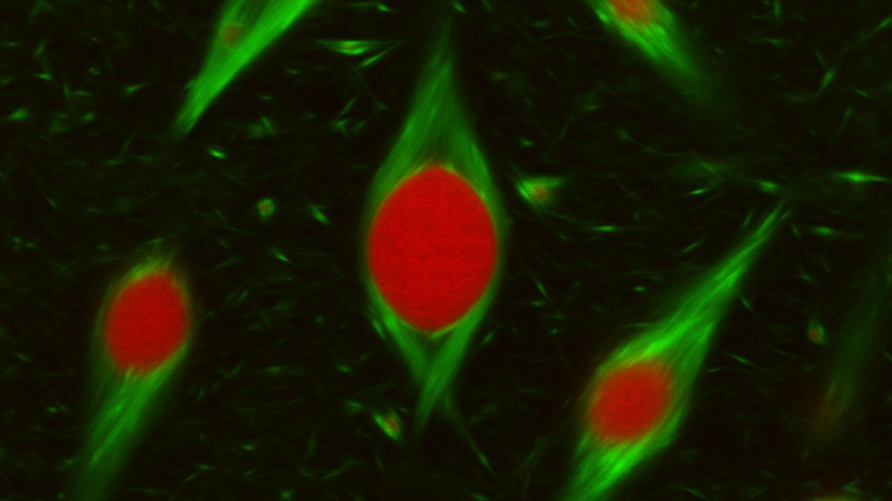
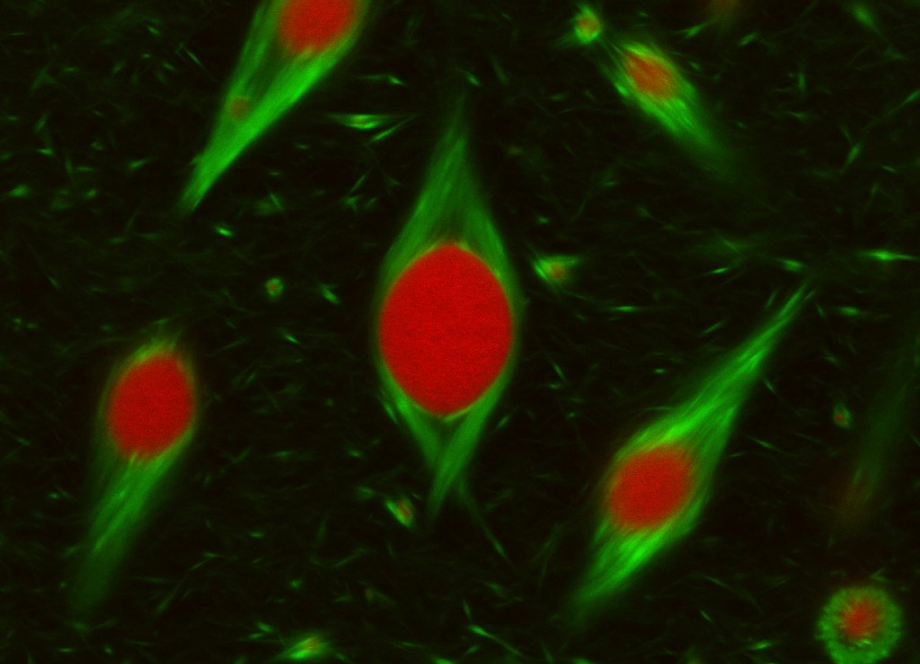

OVERVIEW
The Macromolecular Physical Chemistry Lab (MPC) at Westlake University is led by Dr. Hailin Fu. With inspirations from organized cellular structures in nature, our research focuses on constructing aqueous structures with spatial-temporally controlled functions by employing macromolecules and supramolecular polymers. We’re not only interested in controlling and understanding the structures, dynamics and functions of macromolecules and supramolecular polymers on the single chain level but also building hierarchical solution structures or “liquid factories” by employing the physical chemical properties of aforementioned soft materials and their aggregation and phase separation behaviors. We strive to combine synthesis, characterization, theoretical modeling and micro-device design to develop fundamental understandings and to explore potential applications of structured liquids and their derived states as functional materials for biomedical field, optoelectronics, etc.


Research 1: Structure control of macromolecules and supramolecular polymers
In-situ growth of macromolecules and supramolecular polymers with desired structures, dynamics and functions is fundamental to constructing solution structures at higher dimensions. Molecular and sequence design, kinetically controlled polymerizations and (actively) regulated chemical and physical environment are key components for the control of their structures and solution behaviors.
Research 2: Hierarchical solution structures and functions
Cytoplasm seems to be a crowded and chaotic liquid where, however, different functions cooperate together in an orderly manner, making life itself possible. The dynamic order within the active fluid can be largely attributed to macromolecules (proteins, DNA, RNA, etc.) and supramolecular polymers (actin filament, microtubules, etc.) and their polymerization/depolymerization processes. Inspired by nature, we’d like to explore ways to build spatial-temporally controlled solution structures and functions by taking advantage of the unique chemical and physical properties of macromolecules and supramolecular polymers and their aggregation and phase separation behaviors. The confined, ordered and tunable liquid environment built from both bottom-up and top-down methods could offer more delicate control and a brand new perspective over a broad spectra of matters happening in the liquid or gel state including reactions, information and energy transfer and storage, system communications and cell proliferations, etc. Additionally, the dynamic yet ordered liquid structures could also be turned into functional materials for biomedical, electrical chemical applications and many others.
Research 3: Research methodology/tools development
To better understand and develop the hierarchical solution system with macromolecules and supramolecular polymers, we’ll combine synthesis, characterizations (spectroscopy, microscopy, light scatterings, etc.) and kinetic modelling. Besides, we would not limit ourselves to only scientific explorations but also engineering micro-devices for better controlled and more efficient studies.